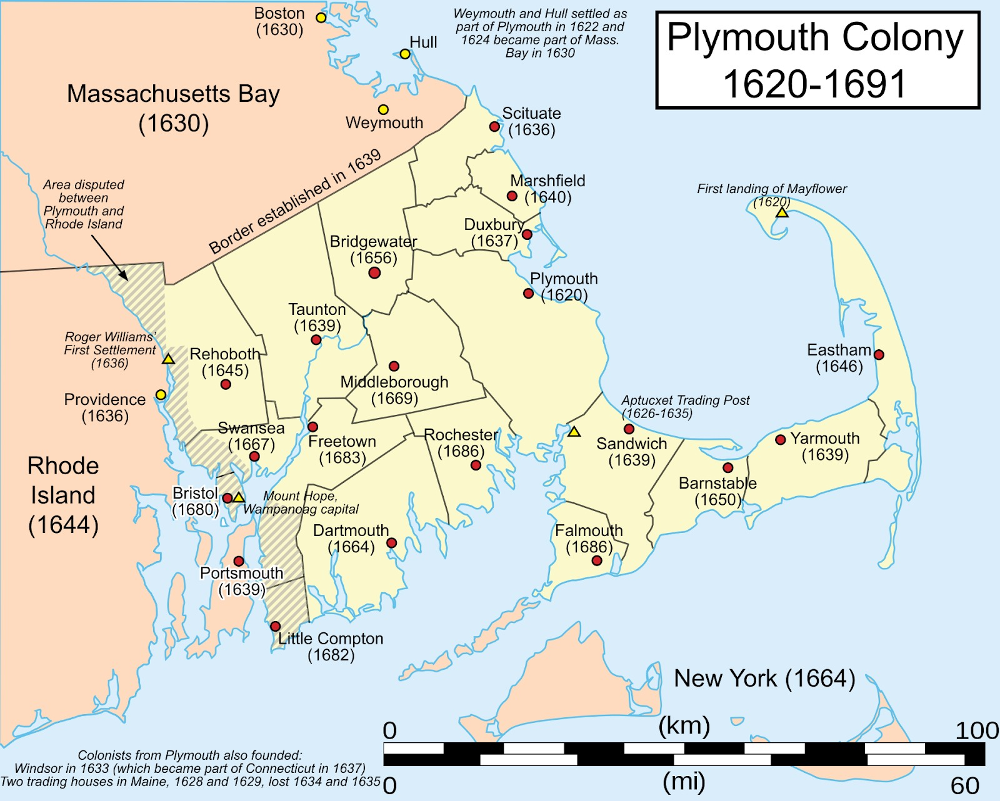
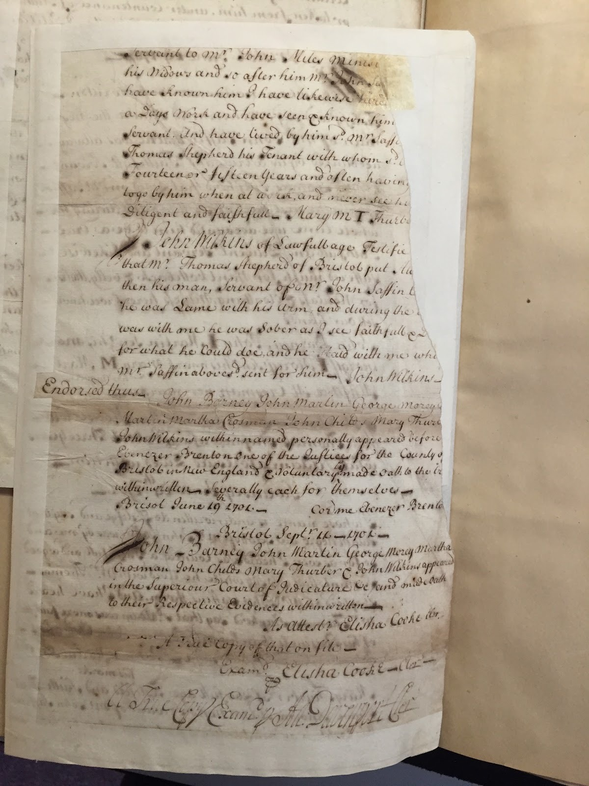

Adam Saffin
Boston & Bristol, New England · c. 1694–1714
Vocabulary
Key terms in this section
Hover, focus, or tap a term to open its working definition.
Dispossession in colonial New England
The legal struggles of Adam, an enslaved man in late seventeenth-century Massachusetts, highlight an intricate genealogy of how possession, bondage, and freedom were negotiated under the evolving rules of colonial law. His experiences offer a direct critique of the static framework of 'prior possession,' exposing instead a dynamic arena where enslaved individuals utilized institutional frameworks to reconfigure their localized social relationships.
Rather than merely relying on abstract claims to self-ownership, Adam challenged his subjugation by navigating existing contractual arrangements, municipal agreements, and regional networks of community support. His case demonstrates how the dispossessed worked within and against colonial structures to contest arbitrary bounds of ownership, reshaping their ongoing operational status relative to their masters and peers alike.
In 1701, the structural parameters of this tension came to a head in the Massachusetts courts through the litigation surrounding *Adam v. John Saffin*. The legal proceedings focused heavily on the enforcement of a conditional manumission agreement, revealing how colonial spaces tried to quantify human liberty as property. By examining Adam's proactive navigation of the judicial apparatus, we find a rich historical lineage of anti-dispossessive politics operating right from within the heart of early New England.

The Middle Passage
Less than two centuries ago, the idea of shipping humans across the Atlantic was as ordinary as the trade of textiles and coffee. The transatlantic slave trade, which lasted from the 16th to 19th century, saw between 10 and 17 million enslaved Africans forcibly transported across the Atlantic Ocean to the Americas. It is estimated that 15 to 25 percent of those who were transported died aboard slave ships.
One of the most critical points of contact between Europeans and Africans for centuries, the trade saw the shipment of enslaved Africans begin steadily, with a few hundred thousand Africans making the journey prior to the 17th century. As plantations in the Caribbean and Chesapeake areas emerged, however, demand for enslaved labor rose. In the 18th century, nearly three-fifths of the total volume of the trade—millions of human beings—was transported from Africa to the Americas.
The journey, often referred to as the Middle Passage, was a brutal, unsanitary trip. Lasting several weeks to months, Africans were packed tightly in rows below decks, suffering sexual abuse, intolerable heat, low oxygen levels, and rampant disease. In one instance, Captain Luke Collingwood of the slave ship Zong ordered that more than 130 Africans be thrown overboard to prevent the spread of disease. He later filed an insurance claim on the value of those he and his crew murdered.
These atrocities did not begin with trips between the New World and the Old. African traders, engaged in the act of capturing Africans to sell into slavery, often exchanged captives for commodities from Asia: luxury goods, firearms, liquor, cowrie shells, textiles. The transatlantic slave trade was thus not a one-step mechanism. It involved the dispossession of African men, women, and children at multiple levels, from victimization at the hands of African slavers to abuse by Europeans who profited off the trade to degradation by Americans who relied on slave labor to generate their wealth.
Interactive Map
Adam Saffin Story Map
Follow the geographic sequence assembled for the Adam case in the team’s KnightLab StoryMap.
Interactive figure. KnightLab StoryMap developed for the Adam Saffin case. If the embedded map does not load, open the StoryMap in a new tab.
Indigenous Maps
The Abenaki word “awikhigan” refers to written language that takes the form of birchbark messages, maps, scrolls, books, and letters. While this critical literacy is often invisibilized in modern cartographic practices, the tradition of writing has remained integral in efforts to articulate indigenous territory.
The prefix “awik-” means “to draw, map, or write”; the suffix “-igan” means “tool or instrument.” Today, “awikhigan” extends to digital creations. The digital humanities are not absolved of a responsibility to center indigenous literacy. Despite the limitations of software that draws maps according to colonial traditions and markers, it is nevertheless vital that we refer to these spaces as stolen indigenous land. Just as Adam’s resistance to his dispossession did not always entail a literal repossession of his body, land, and labor, so too can the resistance of indigenous dispossession entail not just the repossession of territory but also the renewal of dialogue with early indigenous writers and the nourishment of existing indigenous literacies.

Colonial cartography

Indigenous geographies
Implications
Throughout his extensive legal battle against John Saffin, Adam demonstrated that his resistance was fundamentally driven by an effort to enforce, preserve, and reshape his social and legal standing within colonial society, rather than merely engaging in a simple transaction for the abstract ideal of property ownership.
Adam's legal maneuvering functions as an ante-possessive challenge because it destabilizes the dynamic of accumulation itself. His defense relied on proving that the terms of his bondage had been legally dissolved by an explicit covenant—a structural claim that repositioned his body entirely outside of Saffin's right of capital accumulation. By utilizing the colony’s own legal codes against his enslaver, Adam forced the courts to acknowledge the limits of racialized property rights within the institutional frameworks of New England.
Centuries later, the structural components highlighted by Adam's suit continue to expose how systems of accumulation operate by dispossessing individuals under modern juridical frameworks. For instance, contemporary contract labor systems and corporate property disputes frequently demand that human protections be parsed out strictly in terms of individualized losses, obscuring broader communal and social relations.
By shifting our perspective to view these historical records through an ante-possessive lens, we uncover how localized communities and marginalized figures continue to construct tactical networks of mutual aid and legal pushback inside hostile territory, asserting their autonomy through systemic frameworks without surrendering to them.
